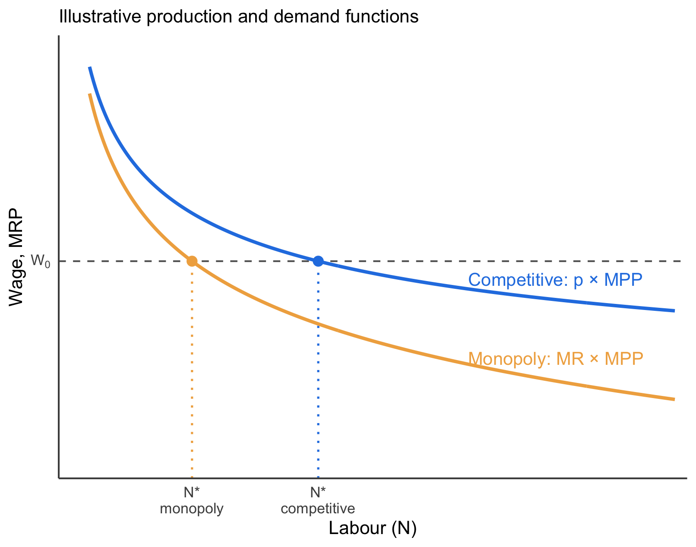
Labour Demand
EC306- Wages and Employment
Justin Smith
Wilfrid Laurier University
Fall 2026

Goals of This Section
Goals of This Section
In this section we will:
- Explain why the demand for labour is a derived demand
- Show how a firm chooses employment in the short run, when its capital is fixed
- Use isoquants and isocost lines to find the cheapest mix of capital and labour
- Split the long-run response to a wage increase into substitution and scale effects
- Identify what makes labour demand more or less elastic, and what the estimates show
- Explain why adding workers and adding hours are different, and what quasi-fixed costs explain
Introduction
Labour Is a Derived Demand
- Firms don’t want workers for their own sake. They want what workers help produce
- Demand for construction workers comes from demand for new buildings, roads and bridges
Key Definition
Derived demand: demand for a factor of production (an input such as labour, machinery or energy) that comes from demand for the goods and services it helps produce
- Firms usually aim to maximize profit. Some instead produce a set level of output at the lowest cost
- What limits them:
- Product demand: what consumers will buy, and at what price
- Input prices: what labour, capital and other inputs cost
- Technology: the production function, which says how much output each mix of inputs makes
Labour Demand in the Short Run
The Firm’s Short-Run Problem
Key Definition
Short run: the period in which the firm has committed to its capital, such as a factory and its machines, so capital is fixed
- One firm makes one output, \(Q\), with two inputs, capital \(K\) and labour \(N\), using a production function:
\[Q = F(K, N)\]
- More of either input always raises output, but by less and less as you add more of it: diminishing marginal returns
- In the short run capital is fixed at \(K_0\), so the only choice is \(N\)
- For now, \(N\) is total hours: workers × average hours. Workers versus hours comes in the last section
- The labour market is competitive: each firm takes the market wage as given, so it is a wage taker
- The rule: keep adding labour as long as the next unit adds more to revenue than to costs
Marginal Revenue Product of Labour
Key Definitions
Marginal physical product of labour (\(MPP_N\)): the extra output from one more unit of labour
Marginal revenue product of labour (\(MRP_N\)): the extra revenue from one more unit of labour
- \(MRP_N\) multiplies the extra output by the extra revenue each unit of output brings, \(MR_Q\):
\[MRP_N = MR_Q \times MPP_N = p \times MPP_N\]
- A firm that takes its output price as given gets \(MR_Q = p\) for every unit
- \(MPP_N\) falls as \(N\) rises because each worker has less capital to work with
- Add diggers to a fence job without adding shovels, and each extra digger adds fewer post holes
Profit-Maximizing Rule
Hire labour until \(MRP_N = W\). In a competitive labour market, one more unit of labour costs the wage
The Short-Run Labour Demand Curve
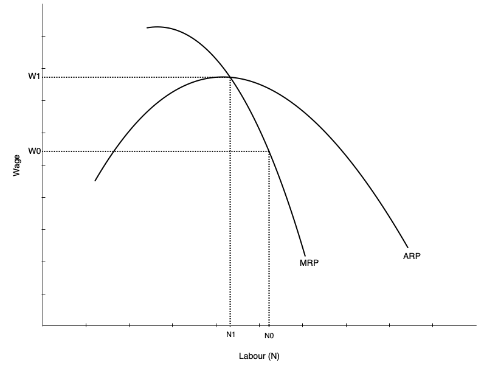
- The short-run demand curve is the falling part of the \(MRP_N\) curve
- At \(W_0\) the firm hires \(N_0\); if the wage rises to \(W_1\), it cuts back to \(N_1\)
- It slopes down because of diminishing marginal returns, not because later hires are worse workers
- Every worker here is the same; each new one just has less capital to work with
- Shut-down rule: if the wage is above the average revenue product, \(ARP_N\), at the best \(N\), revenue doesn’t cover variable costs and the firm closes, even in the short run
Market Power Lowers Labour Demand
- A firm with market power, like a monopolist, must cut its price on every unit to sell one more, so \(MR_Q < p\), and \(MR_Q\) falls as output rises
- So \(MRP_N = MR_Q \times MPP_N\) falls for two reasons, and is lower at every \(N\)
- At the same wage the firm hires less labour, produces less, charges a higher price, and earns economic profit
Warning
Less competition in product markets means lower labour demand
iClicker Question
A bakery sells bread in a competitive market. Demand for bread falls, and the price drops from $5 to $4 a loaf. The wage and the bakery’s equipment don’t change. The bakery’s short-run labour demand curve:
A) Doesn’t change, because the wage didn’t change
B) Shifts left, because each worker’s marginal revenue product falls
C) Shifts left, because each worker now produces fewer loaves
D) Stays put, and the bakery moves down along it to fewer workers
E) Shifts right, because the bakery must sell more loaves to cover its costs
Labour Demand in the Long Run
Two Steps to Long-Run Demand
Key Definition
Long run: the period over which the firm can adjust all of its inputs, including capital
- The best amount of labour depends on how much capital the firm has, and the best amount of capital depends on how much labour it has
- So the firm has to choose \(K\) and \(N\) together. We split that into two steps:
- Cost minimization: find the cheapest mix of \(K\) and \(N\) that produces a given output, \(Q_0\)
- Profit maximization: choose the output level that maximizes profit
- Together, the two steps show how long-run labour demand responds to the wage
- Same setup as before: two inputs, one output, a competitive labour market, identical workers
Isoquants
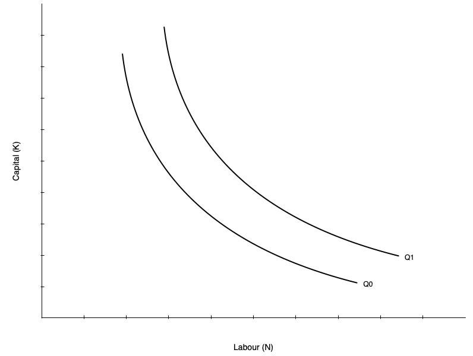
Key Definition
Isoquant: all the combinations of capital and labour that produce the same output
- Isoquants further from the origin mean more output: \(Q_1 > Q_0\)
- Like indifference curves in Chapter 3, they show a third dimension, output, on a flat graph
- The shape shows how easily capital and labour substitute for each other:
- Linear: perfect substitutes, e.g. a robot that always does exactly one worker’s job
- L-shaped: perfect complements, e.g. digging a hole takes one worker and one shovel
- In between: most technologies, e.g. two diggers taking turns with one shovel
The Marginal Rate of Technical Substitution
Key Definition
Marginal rate of technical substitution (MRTS): the slope of the isoquant; how much capital the firm can give up for one more unit of labour while keeping output the same
\[MRTS = \frac{MPP_N}{MPP_K}\]
- If one more unit of labour adds as much output as 3 units of capital, the firm can give up 3 units of capital for it
- The MRTS diminishes as you move down an isoquant
- Swapping labour in for capital lowers \(MPP_N\) and raises \(MPP_K\), so the ratio falls
- The harder the inputs are to substitute, the faster the MRTS falls and the more curved the isoquant
- Linear isoquant: the MRTS never changes
- L-shaped isoquant: the MRTS jumps at the corner
Isocost Lines
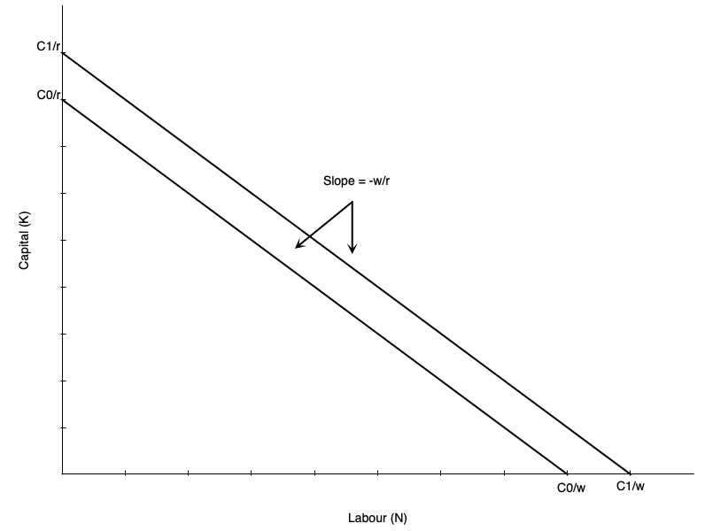
Key Definition
Isocost line: all the combinations of capital and labour that cost the firm the same amount
\[C = rK + WN \quad\Rightarrow\quad K = \frac{C}{r} - \frac{W}{r}N\]
- \(W\) is the wage. \(r\) is the price of capital, best thought of as its opportunity cost: what the owners could earn on their next-best investment
- Slope \(= -W/r\), the price of labour relative to capital
- \(r = 100\) and \(W = 20\): one more unit of capital costs the same as 5 units of labour, so the slope is \(-0.2\)
- If \(W\) rises to 50, the slope is \(-0.5\): a higher wage makes the line steeper
- Lines further out cost more: \(C_1 > C_0\)
The Cost-Minimizing Mix of Capital and Labour
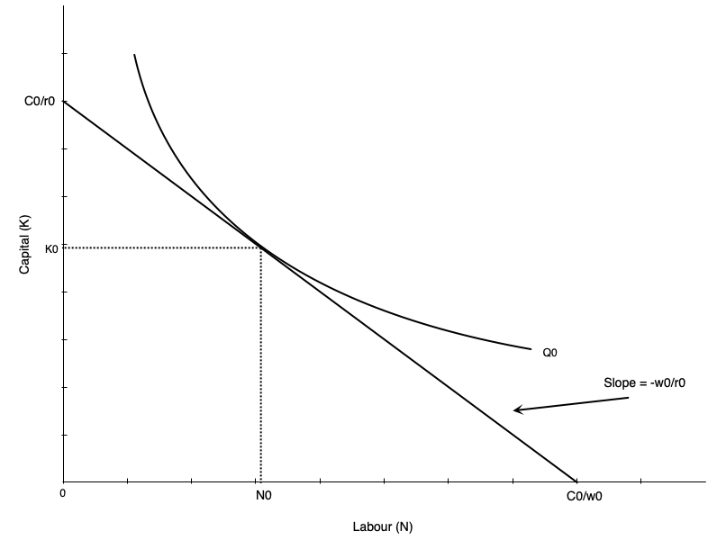
- To make \(Q_0\) as cheaply as possible, find the point on the \(Q_0\) isoquant that sits on the lowest isocost line
- That’s where the isocost line just touches the isoquant, at \((K_0, N_0)\)
- Any other point on \(Q_0\) is on a higher isocost line, so it costs more
Cost-Minimizing Condition
\[MRTS = \frac{MPP_N}{MPP_K} = \frac{W}{r}\]
The rate at which the firm can swap capital for labour in production equals the rate at which the market swaps them
Why the Tangency Is the Cheapest Point
- Rearrange the condition: \(\dfrac{MPP_N}{W} = \dfrac{MPP_K}{r}\)
- The last dollar spent on each input must add the same output
- Example: \(W = 20\), \(r = 100\), \(MPP_N = 5\), \(MPP_K = 10\)
- A dollar on labour adds \(5/20 = 0.25\) units of output; a dollar on capital adds \(10/100 = 0.10\)
- Move $100 from capital to labour: lose 10 units of output, gain \(5 \times 5 = 25\)
- Same cost, more output, so this mix wasn’t the cheapest way to make \(Q_0\)
- Keep shifting: \(MPP_N\) falls and \(MPP_K\) rises until the two ratios are equal
- This condition gives labour demand for a given output
- In the short run the rule was \(MRP_N = W\); here it’s \(MPP_N / MPP_K = W/r\)
- Both tie what labour is paid to how productive it is
- That’s why economists look first at productivity to explain why some workers earn more than others
iClicker Question
At a firm’s current mix of inputs, \(MPP_N = 8\) and \(MPP_K = 20\). The wage is \(W = 25\) and the price of capital is \(r = 50\). To make the same output for less, the firm should:
A) Use more labour and less capital, because labour is the cheaper input
B) Use more capital and less labour, because capital’s marginal product is higher
C) Use more capital and less labour, because the last dollar spent on capital adds more output
D) Keep its current mix, because it is already producing that output
E) Use more labour and less capital, because the MRTS (0.4) is below \(W/r\) (0.5)
A Wage Increase Makes the Old Mix Too Expensive
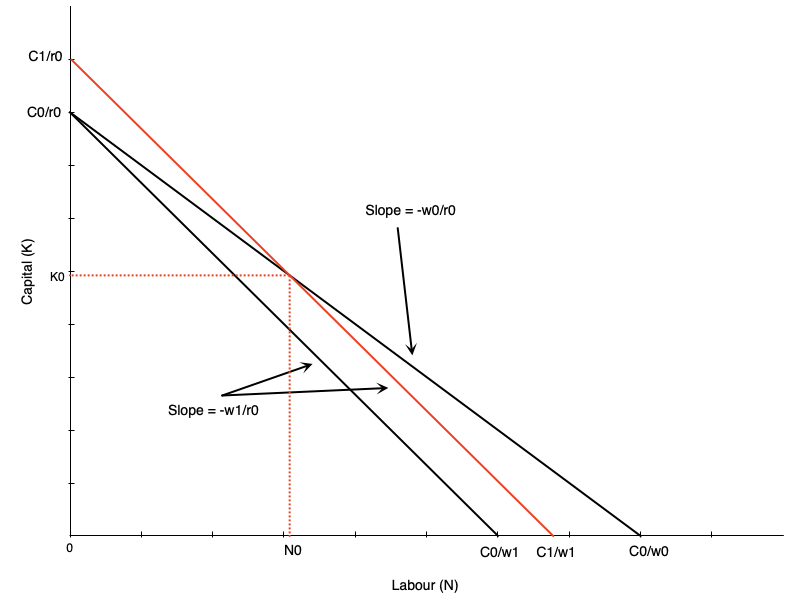
- The wage rises from \(W_0\) to \(W_1\); the price of capital stays at \(r_0\)
- Isocost lines get steeper: the slope is now \(-W_1/r_0\)
- Buying the old mix \((K_0, N_0)\) now costs \(C_1\), more than \(C_0\)
- The new isocost line isn’t tangent to the isoquant at that point, so it’s no longer the cheapest way to make \(Q_0\)
- And \(Q_0\) itself may no longer be the profit-maximizing output
- Two questions: how much does the firm now produce, and with what mix?
Deriving the Long-Run Labour Demand Curve
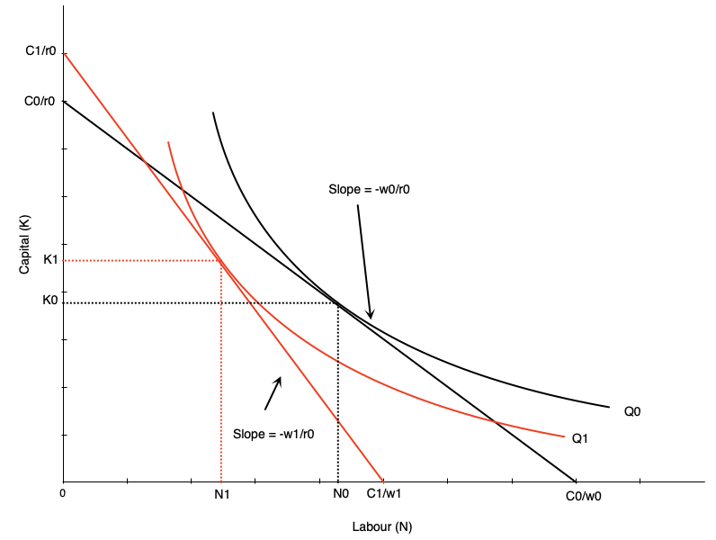
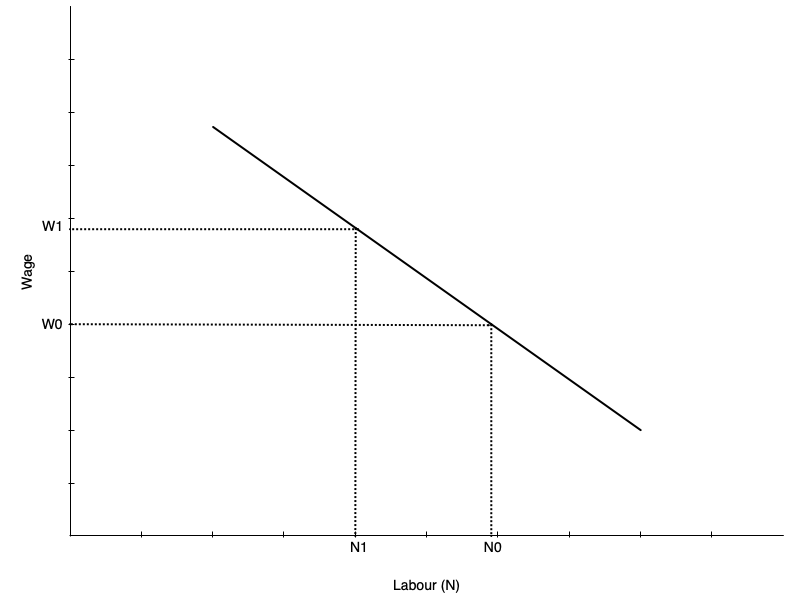
- A higher wage raises marginal cost, so the firm produces less. Prices rise a little as the whole industry cuts back, but output still falls
- At \(W_1\) the firm moves to a lower isoquant, \(Q_1\), and picks the tangency with the steeper isocost line. It uses less labour: \(N_1 < N_0\)
- \((W_0, N_0)\) and \((W_1, N_1)\) are two points on the long-run labour demand curve; other wages trace out the rest
- The curve holds the price of capital, technology and product demand constant. A change in any of those shifts the whole curve
Substitution and Scale Effects
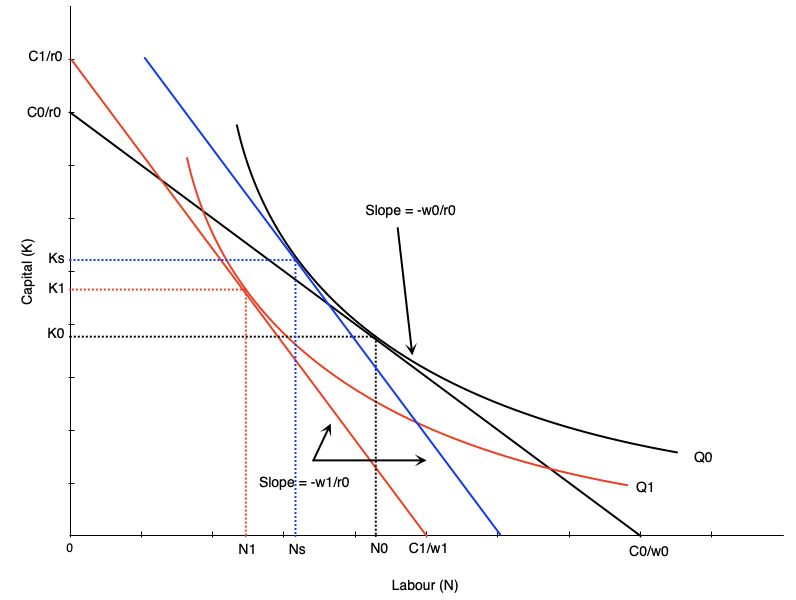
Key Definitions
Substitution effect: the change in labour from the change in relative input prices, with output held at \(Q_0\): \(N_0 \rightarrow N_S\)
Scale effect: the change in labour from the change in output: \(N_S \rightarrow N_1\)
- Labour: the substitution effect always cuts it, and the scale effect normally does too, so long-run labour demand slopes down
- Capital: the substitution effect raises it and the scale effect lowers it, so the net effect is ambiguous. In this graph it rises: \(K_1 > K_0\)
iClicker Question
After a minimum wage increase, a burger chain (a) installs ordering kiosks and (b) closes some locations, because its higher prices cut its sales. These are:
A) (a) the substitution effect, (b) the scale effect
B) (a) the scale effect, (b) the substitution effect
C) Both substitution effects
D) Both scale effects
E) (a) the substitution effect, (b) the income effect
The Relationship Between Short-Run and Long-Run Labour Demand
Short-Run and Long-Run Responses
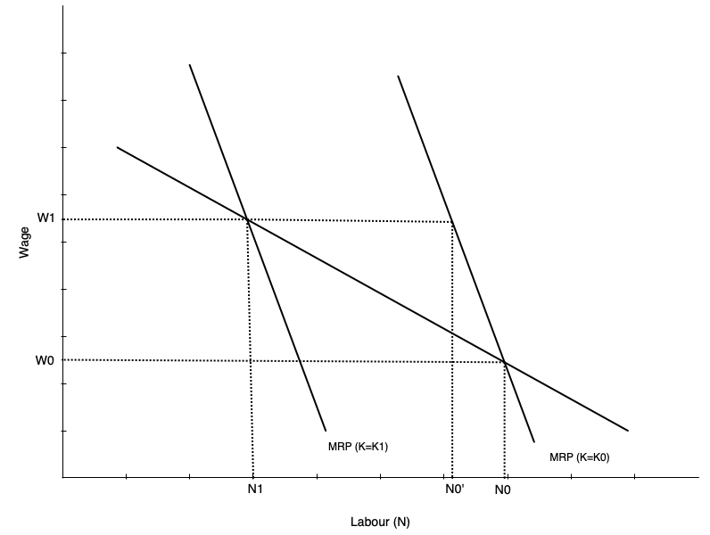
- Short run: capital is fixed at \(K_0\), so there’s a scale effect but no substitution effect. The firm moves along \(MRP(K = K_0)\) from \(N_0\) to \(N_0'\)
- Long run: the firm also adjusts capital. In this graph it ends up with less, \(K_1\), so each worker is less productive and the short-run curve shifts left to \(MRP(K = K_1)\). Employment falls to \(N_1\)
- So the long-run response is usually larger, and long-run demand more elastic
- But not always: if the firm instead ends up with more capital, that raises \(MPP_N\) and softens the scale effect
- In theory the long-run response could then be smaller. It’s unusual, but the book doesn’t rule it out
Elasticity of Demand for Labour
Why the Elasticity Matters
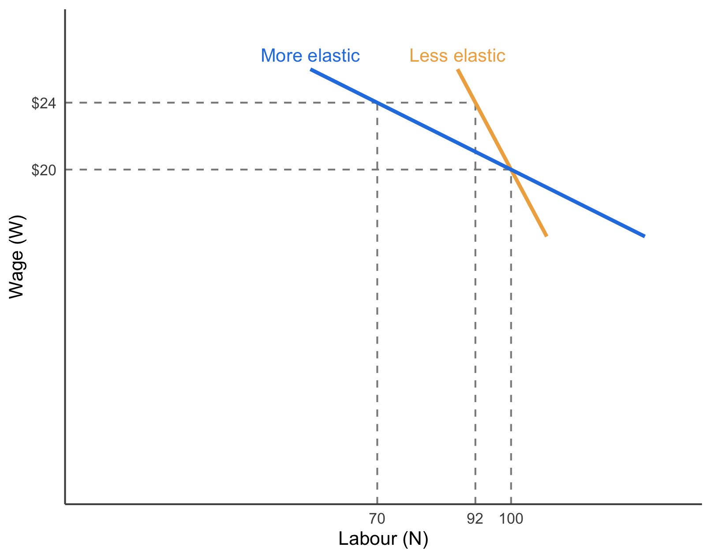
- Minimum wages and pay equity laws push wages up. Theory says that costs jobs
- How many depends on the elasticity of demand for labour
Key Definition
Elasticity of demand for labour: the percentage change in labour demanded when the wage rises 1%: \(\%\Delta N / \%\Delta W\)
- In the graph the wage rises 20%:
- Less elastic: employment falls 8%, an elasticity of −0.4
- More elastic: employment falls 30%, an elasticity of −1.5
The Hicks-Marshall Rules
- What makes labour demand more or less elastic? Marshall set out four rules, which Hicks (1963) formalized
- Each one works through the substitution effect or the scale effect
| Rule | Labour demand is less elastic when… | Works mainly through |
|---|---|---|
| Availability of substitute inputs | Other inputs are hard to substitute for labour | Substitution effect |
| Elasticity of supply of substitute inputs | The supply of those substitutes is inelastic | Substitution effect |
| Elasticity of demand for output | Demand for the product is inelastic | Scale effect |
| Share of labour costs in total costs | Labour is a small share of total cost | Scale effect |
- Flip each condition to get the cases where labour demand is more elastic
The Rules in Practice
- Substitutes: labour is hard to replace when it’s essential to production, when a union contract limits outsourcing or new technology, or in the short run. Robots and AI make it easier to replace, which makes demand more elastic (Chapter 10)
- Supply of substitutes: a patented robot made by one supplier that can’t scale up gets more expensive as firms switch to it, which limits substitution
- Demand for output: where buyers have few alternatives, like construction on scarce zoned land, tariff-protected industries or public services, firms pass higher costs on and lose few sales. Clothing and computers are the opposite
- Labour’s share of cost: a raise for airline pilots or a bank’s cleaners barely moves total cost, so their demand is inelastic. For government workers and university faculty, pay is most of the cost, so demand is more elastic
iClicker Question
Which group of workers likely faces the least elastic labour demand?
A) Sewing-machine operators at a clothing maker that competes with imports
B) Cashiers at a grocery chain that can install self-checkouts
C) Call-centre agents, whose wages are 70% of the firm’s costs
D) Maintenance electricians at an oil refinery
E) Warehouse pickers whose firm can lease picking robots from many competing suppliers
Estimates of the Elasticity of Labour Demand
Most estimates lie between 0 and −1: labour demand is inelastic, but it clearly slopes down
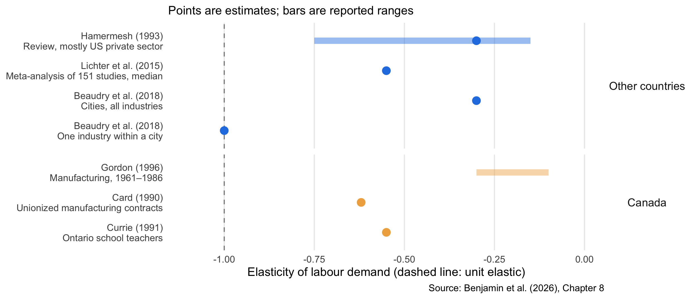
Adjusting Workers versus Hours Worked
Workers and Hours Are Not the Same
- So far, more hours from existing workers and more workers were the same thing. Two reasons they aren’t:
- In production: they’re imperfect substitutes
- To add 40 hours a week, a firm could give 5 workers an extra 8-hour Saturday shift, or hire one new full-time worker
- Tired workers favour the new hire; learning by doing favours the experienced ones
- In costs:
- Variable costs rise with total hours, however they’re added: wages, and benefits set as a share of pay, like pension contributions or vacation pay
- Other costs come per worker
Key Definition
Quasi-fixed costs: labour costs paid per employee that don’t depend, or barely depend, on hours worked. They’re pure if completely independent of hours, and mixed if they rise with both workers and hours, but not equally
Examples of Quasi-Fixed Costs
- Hiring: recruiting, interviewing and training a new worker, whatever hours they go on to work
- Expected termination: a new hire may turn out to be a poor match, and letting them go has costs too
- Payroll taxes with a ceiling: employer contributions to the CPP and EI stop once a worker’s earnings pass a ceiling, so extra hours from that worker add no tax
- Employment standards legislation: after a minimum length of service, workers qualify for paid holidays and notice of termination
- Benefits per employee: life, medical and dental plans often cost a set amount per person
Not Quasi-Fixed
Costs that scale with pay, like pension contributions set as a share of earnings, or vacation pay. They cost the same whether the extra labour comes from more workers or more hours
- Recurring quasi-fixed costs come every period (payroll taxes); nonrecurring ones come once (hiring, orientation, dismissal)
Hiring as an Investment
- Quasi-fixed costs raise the cost of adding a worker compared with having existing workers put in more hours
Key Definitions
Extensive margin of adjustment: changing the number of workers
Intensive margin of adjustment: changing hours per worker
- Firms want to spread fixed costs over as many hours and years as possible, especially for skilled workers, whose training costs the most
- A firm hires until the present value of what a new worker adds equals the present value of what they cost:
\[H + \sum_{t=0}^{T} \frac{W_t}{(1+r)^t} = \sum_{t=0}^{T} \frac{MRP_t}{(1+r)^t}\]
- \(H\) is the hiring cost, including training, paid when the worker starts (\(t = 0\)); \(r\) is the discount rate; \(T\) is how long the worker is expected to stay
What the Hiring Condition Implies
- Hiring depends on expectations: how long the worker will stay, future wages, and future demand for the product
- To pay back \(H\), a worker’s \(MRP\) has to be above the wage in most future periods:
\[\sum_{t=0}^{T} \frac{MRP_t}{(1+r)^t} > \sum_{t=0}^{T} \frac{W_t}{(1+r)^t}\]
- Example, with no discounting: hiring cost $12,000; wage $50,000 a year; \(MRP\) $56,000 a year
| Expected tenure | Hiring cost | Total wages | Total MRP | Profit from the hire |
|---|---|---|---|---|
| 1 year | $12,000 | $50,000 | $56,000 | −$6,000 |
| 2 years | $12,000 | $100,000 | $112,000 | $0 |
| 3 years | $12,000 | $150,000 | $168,000 | $6,000 |
| 4 years | $12,000 | $200,000 | $224,000 | $12,000 |
- The firm won’t fill a job it expects to last less than 2 years. Discounting pushes that point out further
Overtime, Outsourcing, and Gig Work
- Quasi-fixed costs help explain several things we see in labour markets
- Overtime: firms pay time-and-a-half for extra hours instead of hiring, because a new hire brings hiring and training costs
- Temporary help agencies and outsourcing: the agency or contractor does the hiring and training, so firms skip quasi-fixed costs for short spells. Canada’s employment services industry grew 10.6% a year from 1991 to 2015, against 2.1% for all jobs
- The gig economy: Uber’s drivers are generally treated as independent contractors, not employees
- No hiring costs or benefits, and the drivers supply the capital: their own cars
- More on the gig economy in Chapter 10
iClicker Question
A province requires employers to provide dental coverage costing $2,000 per employee per year, whatever hours the employee works. To produce the same output, firms will most likely:
A) Use fewer workers, each working longer hours
B) Use more part-time workers, to spread the cost across more people
C) Keep the same workers and hours, because labour costs rise either way
D) Cut every worker’s hours, because the coverage raises the cost of each hour worked
E) Lay off their most experienced workers, because they cost the most
Layoffs and Labour Hoarding
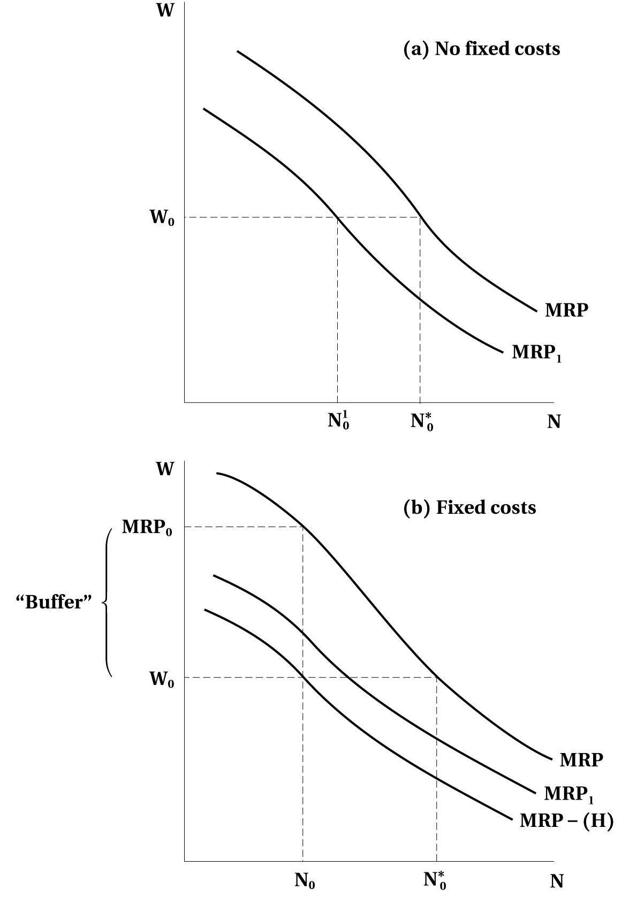
Source: Benjamin et al. (2026), Figure 8.7
Key Definition
Labour hoarding: keeping workers on the payroll through a downturn even though current output doesn’t need them
- (a) No hiring costs: the firm hires where \(MRP = W_0\). When demand falls to \(MRP_1\), it lays workers off
- (b) Hiring cost \(H\): the firm hires only where \(MRP - H = W_0\), so at \(N_0\) the worker’s \(MRP_0\) is above \(W_0\) by a buffer
- \(H\) is already spent, so when demand falls to \(MRP_1\) the firm keeps all \(N_0\) workers as long as \(MRP_1\) still covers \(W_0\)
- Skilled workers cost more to hire and train, so they have a bigger buffer and lower layoff rates
Summary
Summary
Short run:
- With capital fixed, firms hire until \(MRP_N = W\). Product market power lowers \(MRP_N\), so firms hire less
Long run:
- Firms find the cheapest mix where \(MRTS = W/r\), then choose output. A wage increase has a substitution and a scale effect; both cut labour, while capital can go either way
Short run versus long run:
- The long-run response is usually larger, because the firm can also substitute away from labour
Elasticity:
- Four Hicks-Marshall rules: substitutes, the supply of substitutes, demand for output, and labour’s share of cost. Most estimates are between 0 and −1
Workers versus hours:
- Quasi-fixed costs make adding workers costlier than adding hours. They help explain overtime, temp agencies and labour hoarding
References
- Aizcorbe, A. (1992). Procyclical labour productivity, increasing returns to labour and labour hoarding in car assembly plant employment. Economic Journal, 102(413), 860–873.
- Beaudry, P., Green, D. A., & Sand, B. M. (2018). In search of labor demand. American Economic Review, 108(9), 2714–2757.
- Benjamin, D., Foley, K., Gunderson, M., Lemieux, T., Schirle, T., & Skuterud, M. (2026). Labour Market Economics, 2026 Release. McGraw Hill. Chapter 8 and figure bank.
- Canada Revenue Agency. (2026). EI premium rates and maximums. canada.ca.
- Card, D. (1990). Unexpected inflation, real wages, and employment determination in union contracts. American Economic Review, 80(4), 669–688.
- Currie, J. (1991). Employment determination in a unionized public-sector labor market: The case of Ontario’s school teachers. Journal of Labor Economics, 9(1), 45–66.
- Gordon, S. (1996). Using mixtures of flexible forms to estimate factor demand elasticities. Canadian Journal of Economics, 29, 717–736.
References (cont.)
- Hamermesh, D. S. (1993). Labor demand. Princeton University Press.
- Hicks, J. R. (1963). The theory of wages (2nd ed.). Macmillan.
- Houseman, S. N. (2001). Why employers use flexible staffing arrangements: Evidence from an establishment survey. Industrial and Labor Relations Review, 55(1), 149–170.
- Jäger, S., & Heining, J. (2022). How substitutable are workers? Evidence from worker deaths. NBER Working Paper No. 30629.
- Lemieux, T., Milligan, K., Schirle, T., & Skuterud, M. (2020). Initial impacts of the COVID-19 pandemic on the Canadian labour market. Canadian Public Policy, 46(S1), S55–S65.
- Lichter, A., Peichl, A., & Siegloch, S. (2015). The own-wage elasticity of labor demand: A meta-regression analysis. European Economic Review, 80, 94–119.
- Nagatani, K. (1978). Substitution and scale effects in factor demands. Canadian Journal of Economics, 11(3), 521–527.